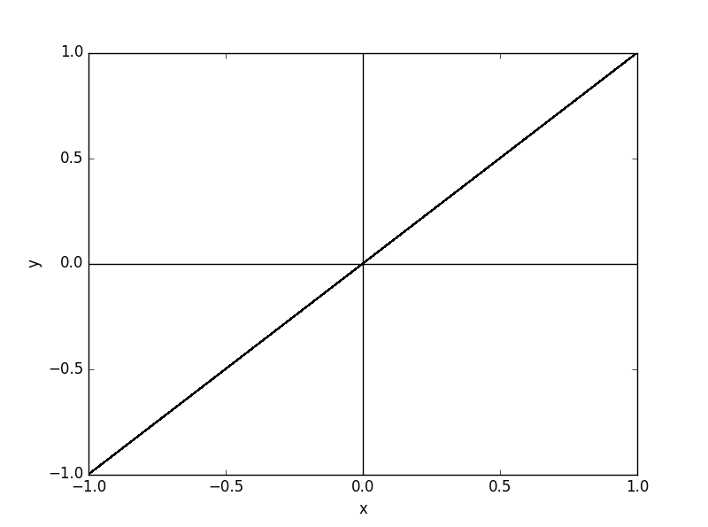
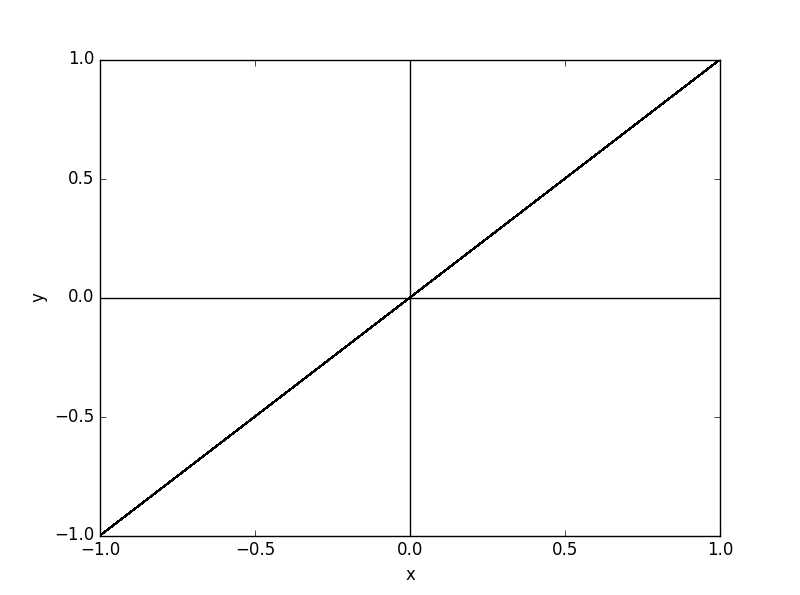

1 - Random Number Generation Convergence:
We always hear that random numbers have a gaussian distribution meaning that they have a peak at the mean-value if plotted and the distribution decreases gradually from both sides of this peak.
In this program we want to check this feature of random numbers using the random package of Python. This matter at hand is generally called Random Number Generation (RNG) Convergence. We see that we can try this easily using a few lines of code. we take the mean value of an interval of numbers, and we generate random numbers in that interval. then, summing all those values and split it by the number of them (averaging), we see that the peak of the distribution is indeed with some small error around the mean value of that interval.
OUTPUTs :
-0.0002685990603428223: this is the error of computed mean value from the actual one.
2 - Iterated Mapping of a Recursive Function:
Do you want to know how to work out a recursive function looking like Xn = f(Xn+1) using python?
In this program we want to discuss a simple physical model whose dynamics leads directly to such an iterated map, namely a periodically kicked particle of mass m. Use this excerpt from Hans Jürgen Korsch, Hans-Jörg Jodl, Timo Hartmann’s book named “Chaos: A Program Collection for the PC” to see the theoretical foundations of this well-known logistic map.
Here we want to make a diagram of xn+1 = 4rxn (1 − xn) and see how it behaves.
3 - Changes of a Logistic Map While Altering r Parameter:
In this program we want to illustrate how a 2D iterated map created by the function defined in the previous section, namely the one for Xn+1 = 4rXn(1-Xn), corresponds to different values of r.:
.png)
Why is this kind of maps important? It is often cited as an archetypal example of how complex, chaotic behaviour can arise from very simple non-linear dynamical equations. Just look at the changes of the diagram when altering r.
4 - Solving a Simple Free Fall Equation Numerically:
In this program we want to illustrate how a mass behaves when only force of gravity applies. In addition, we want to see how changing dt changes the results.
OUTPUTs :
at t = 1s :
Anlytically : height = 15.1
for dt = 0.001 : height = 15.099999999999557
for dt = 0.00001 : height = 15.099999999920604
as you can see with dt = 0.00001 the result at t = 1s is accurate to 10 decimal place!
for dt = 0.000001 : height = 15.100000000815756
for dt = 0.0000005 : height = 15.099999998496276
as you can see smaller dt doesnt mean more accuracy
It hits the ground at : 2.021
One can see that results became pretty close to what they should be:
| dt | Error |
|---|---|
| 0.001 | 4.4231285e-13 |
| 0.00001 | 7.9396045e-11 |
| 0.000001 | -8.1575635e-10 |
| 0.0000005 | 1.50372337e-9 |
Did you note the fact that the smaller we take our dt to be, the worse the result gets? why do you think this happens although taking dt to be smaller should result in a more accurate result? In numerical approximations, there is an optimum for the methods’ variables . . knowing this we can state that dt=0.001 is the closest to that optimum.
5 - The Effects of Drag Force on a Mass in Free Fall:
In this program we want to illustrate how drag force affects free fall . .
Using a mass released from 100m above earth’s surface which has a final velocity (terminal velocity) of -6m/s due to drag force:


OUTPUTs :
accelerations :
[-9.802, -8.425546545944242, -7.242382635979693, -6.2253654359299375, -5.351163665164269, -4.5997223562341505, -3.9538027760529633, -3.398586954001, -2.9213377444780946, -2.5111066254360286, -2.1584825295286905, -1.8553759458428334, -1.5948333393107652, -1.370877630420989, -1.1783710756892247, -1.0128974032456584, -0.8706604996237859, -0.7483973235355305, -0.643303048797053, -0.5529667191172629, -0.4753159386125878, -0.40856932919909594, -0.3511956641922264, -0.30187874060246955, -0.2594871842661834, -0.22304849511433855, -0.19172673715452618, -0.1648033613545682, -0.1416607214875505]
velocities :
[0, -0.8425546545944242, -1.5667929181923934, -2.1893294617853876, -2.7244458283018145, -3.1844180639252295, -3.5797983415305263, -3.9196570369306265, -4.211790811378436, -4.462901473922039, -4.6787497268749085, -4.864287321459192, -5.023770655390268, -5.160858418432367, -5.27869552600129, -5.379985266325857, -5.467051316288235, -5.541891048641789, -5.6062213535214935, -5.66151802543322, -5.709049619294478, -5.749906552214387, -5.78502611863361, -5.815213992693857, -5.841162711120475, -5.863467560631909, -5.882640234347362, -5.899120570482819, -5.913286642631575]
positions :
[100, 99.91574453454055, 99.7590652427213, 99.54013229654277, 99.26768771371259, 98.94924590732006, 98.591266073167, 98.19930036947395, 97.7781212883361, 97.33183114094389, 96.8639561682564, 96.37752743611047, 95.87515037057145, 95.35906452872821, 94.83119497612809, 94.2931964494955, 93.74649131786667, 93.19230221300249, 92.63168007765034, 92.06552827510703, 91.49462331317758, 90.91963265795614, 90.34113004609279, 89.7596086468234, 89.17549237571134, 88.58914561964815, 88.00088159621342, 87.41096953916514, 86.81964087490198]
Here we took dt to be 0.1 and you can see that results became pretty close to what they should be . .
6 - Water Velocity Out of a Hole:
How fast can water get out of a hole at the bottom of a cylindrical container? This is a program I have written for one of my independent projects on d evising new green energy sources..
In this program we want to calculate the velocity of the water (with respect to time) which is being pushed out of a cylindrical container by a dense piston.
Using steel piston with weight equal to 49568048N, in a container of 20m height filled with water we get:
OUTPUTs :
first entering velocity : 752.4041437124883 m/s
in kilometers : 2699.475586811666 km/h
last entering velocity : 502.4421291627446 m/s
in kilometers : 1802.6618710100952 km/h
the highest velocity in dams is 511.121 km/h in the dam Spirit of Australia.
7 - Lissajous curves:
Lissajous curves are the family of curves described by the parametric equations (given a few lines later) and they have applications in physics, astronomy, and other sciences (Remeber simple harmonic oscillators?). The curves close IF omega_x/omega_y is rational.
In this program we want to draw them and investigate different forms of them. In the following, x = sin(A * wx*t + phiX) and y = sin(B * wy*t + phiY) formulas are used:
 
